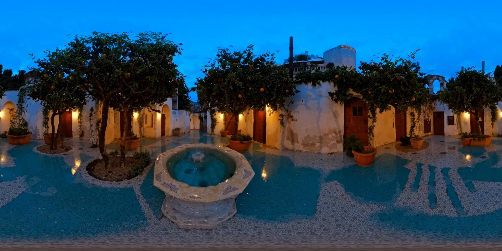
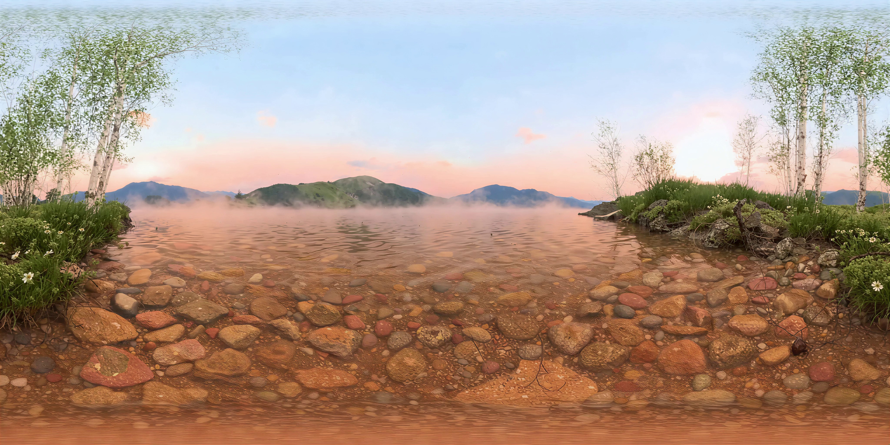
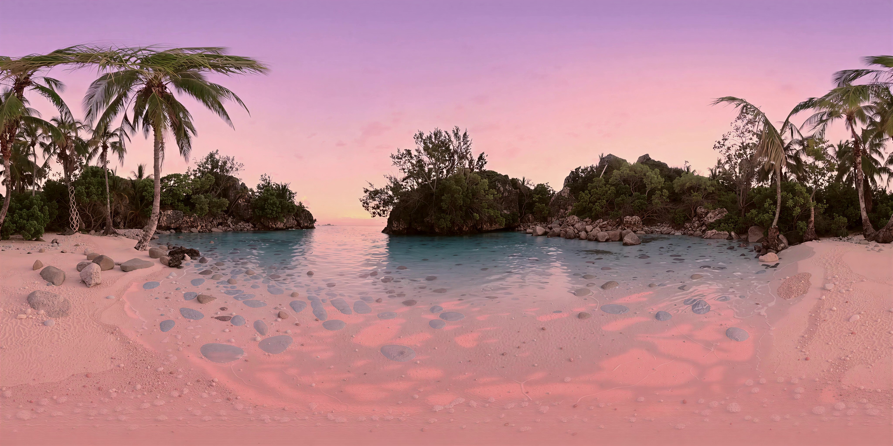
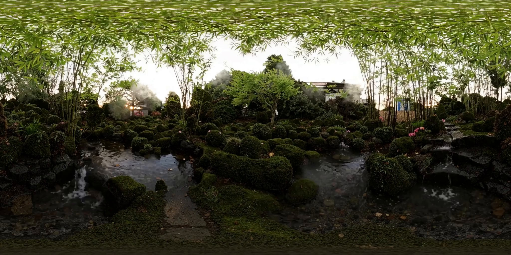

Text to 360°
Turn a scene description into a panoramic video. Look around in every direction from one viewpoint.
GR360
Describe a scene. Experience it in 360° video and sound.
Work in progress
GR360 brings together text-to-360° video, spatial audio generation, and looping environments. Describe a scene to create a world of surrounding images and sound.
Explore the relationship between the generated visuals and sounds in the courtyard, mountain lake, tropical cove and moss garden demos below.
From a written scene to an environment you can explore.
Turn a scene description into a panoramic video. Look around in every direction from one viewpoint.
Generate spatial audio for 360° scenes, placing sounds within the surrounding environment.
Replay short moments of environmental motion and sound, with time to explore the surroundings.
Watch and listen to inspect how visual events correspond to the generated sounds.
See and hear the examplesExplore the correspondence between generated motion and sound.

Watch the fountain and listen to the courtyard in stereo.

Use headphones and turn your view to explore the lake’s spatial sound.

Explore the cove and its spatial sound in the warm light of sunset.

Explore the waterfall and bamboo with spatial sound that follows your view.
Qualitative audiovisual examples. Numerical accuracy and sound-localization scores are not reported here.
The full equirectangular frames behind the interactive scenes.




Four selected demos · 2048 × 1024 · 5 seconds
These demos are a work in progress. Distortion, stretched textures, and repeated patterns can appear near the poles. Motion, appearance, and sound changes may remain at the loop boundary.
Blue hour in the courtyard plays stereo audio. Morning on the silver lake, Peach light on the cove and A quiet jade garden include spatial audio previews that change with your viewing direction. Use headphones, turn on sound, and drag the video to look around. Perceptual audio quality, source separation, and localization accuracy have not been validated.